2012-03-02T09:53:03Z
Paseando por Kamakura (鎌倉を散歩)
Paseando por Kamakura (鎌倉を散歩)
El año pasado, estando en Japón, aproveché una de mis escapadas a Tokyo para pasar un día tranquilo paseando por Kamakura, que además de estar cerca de la capital nipona, es un sitio ideal para pasar un día haciendo fotografías y visitando templos. Si el tiempo acompaña (ni mucho calor, ni tampoco frío) como fue [...]

El año pasado, estando en Japón, aproveché una de mis escapadas a Tokyo para pasar un día tranquilo paseando por Kamakura, que además de estar cerca de la capital nipona, es un sitio ideal para pasar un día haciendo fotografías y visitando templos. Si el tiempo acompaña (ni mucho calor, ni tampoco frío) como fue el caso, las horas pasan sin que te des cuenta, por lo que madrugar un poquito merece la pena.

Recomiendo que os bajéis en la pequeña estación de Kita-Kamakura, visitéis el cercano Engaku-ji y os dirijáis hacia el sur (hacia el centro de Kamakura) sin dejar de pulular por las decenas de templos y capillas que iremos encontrando. Además de las edificaciones, las sorpresas, que en realidad allí son cosas totalmente cotidianas, irán fluyendo a vuestro paso. Por ejemplo, encontré a una pareja haciendo Kyūdō, me recordaron a los chiquillos del club deportivo que conocí cuando me infiltré en un instituto japonés.

Como era un día de diario, no había mucha gente. Si acaso algún colegio de excursión visitando la zona, así que se estaba bastante a gusto. Al llegar al Jōchi-ji (aquí tenéis su ubicación en google maps, para orientaros un poco mejor) me encontré con otra de las gratas sorpresas que me deparaba el paseo de hoy. Había un montón de japoneses pintando, no solo el entorno natural era ideal, si no el ambiente de trabajo: relajado pero efectivo. Me planteé venirme aquí a trabajar los días que hiciera buen tiempo, pero luego me di cuenta que no había enchufes para mis cacharros. 

Durante el paseo, los templos, santuarios, pequeñas capillas e imágenes de deidades no dejan de sucederse, en algunos caminos el bambú nos rodea como si fueran centinelas a nuestro paso, que parecen quejarse si el viento les empuja con más fuerza de la que a ellos les apetece. Paré a comer algo y tomar una bebida ya cerca de la estación de Kamakura y seguí mi caminar. Después de un buen rato andando por los alrededores, me dirigí hacia el templo Hasedera, que me gusta mucho, y allí me tomé otro descanso.

Ya para acabar, me dirigí al Gran Buda de Kamakura, cuando llegué había una excursión de un colegio todos uniformados como en los manga, organizándose para hacerse una foto de grupo frente al monumento. Me quedé observándoles un rato, con una sonrisa, era curioso ver cómo los ordenaban. Luego esperé a que se disolvieran para estar más tranquilo. Aquí fue en el único lugar de todo el paseo donde vi visitantes extranjeros.

Para terminar, antes de coger el tren de regreso, me dí un paseo por la playa, descalzo con los pies en el agua: nada más reconfortante… Enoshima se veía en la lejanía y su faro se encendió recordándome la hora que era. Fui a la estación mas cercana de la línea Enoden y después tomé el JR. Lo último que recuerdo es haber encontrado un lugar para sentarme en el tren tras el transbordo en Yokohama. Después, me quedé profundamente dormido…

2012-02-24T07:05:46Z
Subasta del atún en el mercado de Tsukiji
Subasta del atún en el mercado de Tsukiji
Hace ya tiempo que os hablé del mercado del pescado de Tsukiji, el mercado de pescado más grande del mundo, situado en Tokyo y que, además, se ha convertido un atractivo turístico sobretodo por la subasta del atún que comienza a las 5.30am y a la que un limitado número de visitantes al día puede [...]
Hace ya tiempo que os hablé del mercado del pescado de Tsukiji, el mercado de pescado más grande del mundo, situado en Tokyo y que, además, se ha convertido un atractivo turístico sobretodo por la subasta del atún que comienza a las 5.30am y a la que un limitado número de visitantes al día puede asistir. En su momento, os prometí que subiría un vídeo de la misma, así que, aquí lo tenéis.
Aunque es solo de un minuto y medio (si fuera de más se haría pesado) se distingue cómo, primero, los compradores observan el género (que está etiquetado con su peso, procedencia, etc.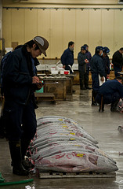.), después, se produce la puja, y, por último, marcan quién lo ha comprado y se lo llevan. ¡Espero que os guste!
¡¡ FELIZ FIN DE SEMANA A TODOS !!
2012-02-17T07:37:39Z
Miyamoto Musashi (宮本武蔵)
Miyamoto Musashi (宮本武蔵)
Miyamoto Musashi (宮本武蔵) fue un famoso Rōnin (guerreros nómadas que no trabajaban para nadie en concreto ni pertenecían a una ningún colectivo) de la época feudal japonesa, y, posiblemente uno de los más conocidos en todo el mundo. También practicó la pintura y la caligrafía, fue el fundador del arte marcial Niten Ichi Ryu y [...]
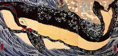
Miyamoto Musashi (宮本武蔵) fue un famoso Rōnin (guerreros nómadas que no trabajaban para nadie en concreto ni pertenecían a una ningún colectivo) de la época feudal japonesa, y, posiblemente uno de los más conocidos en todo el mundo. También practicó la pintura y la caligrafía, fue el fundador del arte marcial Niten Ichi Ryu y autor del Libro de los Cinco Anillos. Empecé a interesarme especialmente por este personaje, cuando visité por primera vez el Castillo de Kokura. Aunque su existencia está totalmente verificada históricamente, alrededor de él han surgido numerosas leyendas.
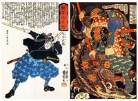
Nació entre el 1580 y el 1582 (no se sabe con exactitud) en una familia de tradición guerrera. Su primer combate tuvo lugar cuando apenas tenía 13 años, en el que venció al experimentado Arima Kigei y, desde entonces, jamás fue derrotado en combate directo cuerpo a cuerpo. A los 16 años comenzó su vida nómada para perfeccionar su técnica y buscarse la vida. Se dice que en el 1600, participó en la sanguinaria Batalla de Sekigahara (que duró tres días y definió el principio de la era Edo) y que, aunque su bando perdió, sobrevivió al enfrentamiento y a los años de posterior persecución de los supervivientes. De dónde si hay constancia real de su presencia es en la Rebelión Shimabara. Su estilo de lucha era bastante particular puesto que usaba dos bokken de madera.
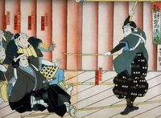
Sus últimos años los pasó en el castillo de Kumamoto, en Kyushu, como vasallo del Clan Hosokawa. Luego se retiró a la Cueva de Reigandō (para meditar y escribir sus libros), donde murió de cancer en 1645. Este guerrero ha sido fuente de inspiración para películas, libros, mangas, ilustraciones y videojuegos. Sin ir más lejos, el manga Vagabond versa sobre su vida y sus viajes y el personaje Haohmaru del juego Samurai Showdown está inspirado en él:
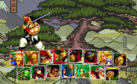
¡FELIZ FIN DE SEMANA A TODOS!
2012-02-10T09:54:39Z
Seiryū-ji, el templo del gran buda (青龍寺)
Seiryū-ji, el templo del gran buda (青龍寺)
Durante mi estancia con Ana Sora en Aomori, para visitar el mágico Osorezan y disfrutar del famoso Nebuta Matsuri, fuimos también a ver el templo Seiryū-ji (青龍寺), popular entre los lugareños por albergar el Gran Buda de Showa, del que ya os hablé hace algunos meses (podéis ir al artículo correspondiente pulsando el link). Curiosamente [...]
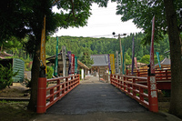
Durante mi estancia con Ana Sora en Aomori, para visitar el mágico Osorezan y disfrutar del famoso Nebuta Matsuri, fuimos también a ver el templo Seiryū-ji (青龍寺), popular entre los lugareños por albergar el Gran Buda de Showa, del que ya os hablé hace algunos meses (podéis ir al artículo correspondiente pulsando el link).
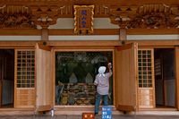
Curiosamente este santuario es un Betsuin(別院), es decir, como una “sucursal” de un lugar sagrado pero muy lejano para que, de esta manera, la gente que no pueda viajar lejos pueda venir aquí. Concretamente este templo es un “betsuin” del Monte Koya (que está cerca de Kyoto). En el recinto, además de la gigantesca estatua de Buda, encontraremos varios jardines y altares, con varias esculturas y pinturas muy interesantes, y una pagoda. A mi, personalmente, me sorprendió ver muchos molinillos de colores en muchos lugares del templo.
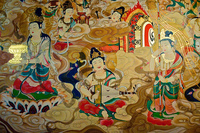
Otra cosa que me gustó de este lugar es que es precioso y apenas hay turistas, apenas vimos alguna que otra pareja de japoneses paseando por la zona. Para llegar a este templo, lo mejor es coger un autobús desde la estación de Aomori, el trayecto tarda 25minutos aproximadamente…¡pero no os despistéis con la hora, el último bus de regreso a la ciudad es a las 17:20!. La entrada cuesta 400yenes. Aquí os dejo con la página oficial del templo, y algunas fotografías más del santuario para que os hagáis la idea de su belleza:
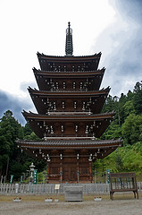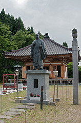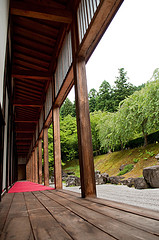
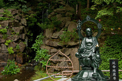
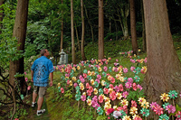
¡¡ BUEN FINDE A TODOS !!
2012-02-03T09:51:13Z
Kokusai dori (国際通り)
Kokusai dori (国際通り)
Kokusai Dōri es una de las calles más famosas de la ciudad de Naha, la capital de Okinawa, en Japón. Aunque no sea una amplísima avenida concentra en una longitud de 1,6Kilómetros la mayoría de la vida nocturna y de entretenimiento de la ciudad, así como comercios dedicados al turismo y la hostelería. Bares, restaurantes [...]
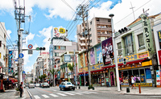
Kokusai Dōri es una de las calles más famosas de la ciudad de Naha, la capital de Okinawa, en Japón. Aunque no sea una amplísima avenida concentra en una longitud de 1,6Kilómetros la mayoría de la vida nocturna y de entretenimiento de la ciudad, así como comercios dedicados al turismo y la hostelería. Bares, restaurantes y tiendas se suceden a lo largo de esa colorida calle que, tanto por el día, como por la noche, es de las más animadas de la ciudad.

Curiosamente, antes de la II Guerra Mundial, esta era una zona suburbial pero, tras el control estadounidense de la ciudad, fue aquí donde se comenzó a desarrollar el mercado negro entre la gente que había perdido sus casas y negocios. De esta manera, esta calle quedó referenciada como una zona de encuentro y comercio desde entonces. Lo que hizo que, además, fuera una de las más rápidas en recuperarse tras el final de la guerra.
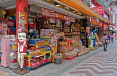
Definitivamente, si estáis buscando un omiyage (o souvenir) tras vuestra visita a Okinawa, debéis buscarlo en esta calle (o colindantes). La verdad es que merece pasear esta vía de principio a fín, está llena de pequeños y graciosos detalles, es difícil de explicar, porque sin tener nada de especial, es un paseo lleno de anécdotas, aunque seguro que me comprenderéis después de haberos dado una vuelta por la zona. Yo de momento os dejo con algunas fotografías de aperitivo  :
:
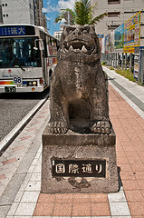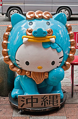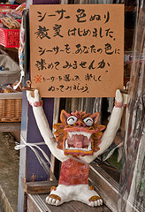
Como véis, a lo largo de la calle encontramos Shisa de todo tipo
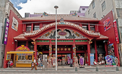
Este establecimiento simula al conocido Castillo de Shuri
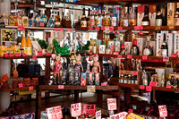
El AwaMori es también otro de los elementos típicos de Okinawa
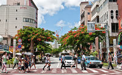
No es el cruce de Shibuya, pero tiene su encanto
¡¡ BUEN FINDE A TODOS !!